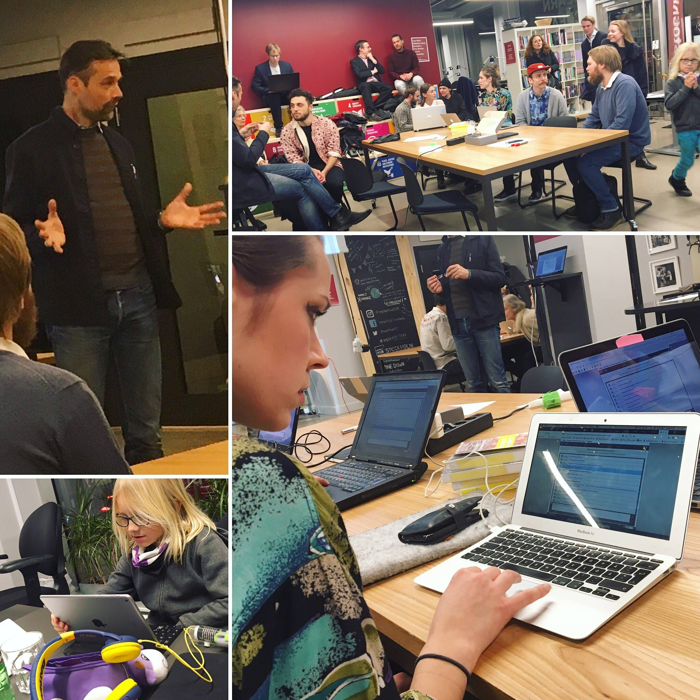

Initiativet
A political party striving towards a deeper democracy built on co-creation and listening

Started as a reaction to the current political landscape with a combination of inspiration and frustration.
Inspiration from the technologic, scientific and social development in the world and the endless possibilities it entails.
Frustration from the lack of ability to create bold and optimistic visions based on these new possibilities.
The world is in urgent need of optimistic new visions in order to face the environmental challenges, the rise of protectionism, the transition to automated labour and much more. Initiativets purpose is to create new models for democratic engagement in order to co-create new visions of our common future. Guided by the vision of prosperous people on a prosperous planet.
 Read more about Initiativet in this New Yorker article or this
debate article or this
DN article describing part of the political process.
Initiativet is based on self organising principles which means that roles are changing organically depending on current needs and common purpose. The roles i have taken on includes:
Read more about Initiativet in this New Yorker article or this
debate article or this
DN article describing part of the political process.
Initiativet is based on self organising principles which means that roles are changing organically depending on current needs and common purpose. The roles i have taken on includes:
- leding processes to create planetary politics for the political programme
- coordinating distribution of ballots for the national elections
- planing of political campaign
- chairman of first anual meeting
- candidate for 2018 national elections